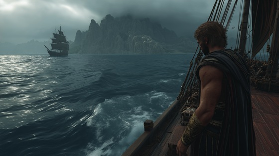

Though victorious, Theseus forgot to change the black sails on his ship to white — the signal to his father King Aegeus that he had survived.
Believing his son dead, Aegeus threw himself from a cliff into the sea, which would forever bear his name: the Aegean Sea.
Theseus returned a hero, but his homecoming was stained with irreparable loss.
"Black Sails, Broken Crowns" captures the devastating truth of myth: even victory is never without its bitter cost
Black Sails, Broken Crowns
The beast is dead, the maze undone
The blackened night gives way to sun
But not all ghosts are left behind—
The threads of sorrow twist and bind
No crown shall gleam, no bell shall ring—
The black sails tear the heart of kings
Black sails, broken crowns
The victor weeps, the kingdom drowns
No gold, no throne, no song, no flame—
Can wash away the shattered name
The waves grew dark, the cliffs grew near
But blinded eyes and drowning fear
Mistook the black for mortal grave—
And from the stone, the king was claimed
No voice to warn, no breath to save—
The crown was lost beneath the wave
Black sails, broken crowns
The victor weeps, the kingdom drowns
No gold, no throne, no song, no flame—
Can wash away the shattered name
I knelt in grief, I broke the spear
The king was gone, the skies were clear
The labyrinth fell, the beast was slain—
But fate still carved her deepest pain
I slew the beast, I bled the skies
Yet in my hand the sorrow lies
No blade can cut, no fire tame—
The black sails burn the hero’s name
Black sails, broken crowns
The victor weeps, the kingdom drowns
The gods may roar, the heroes cry—
But still the kings of men must die
Black sails fall, broken thrones—
The hero stands, the king alone